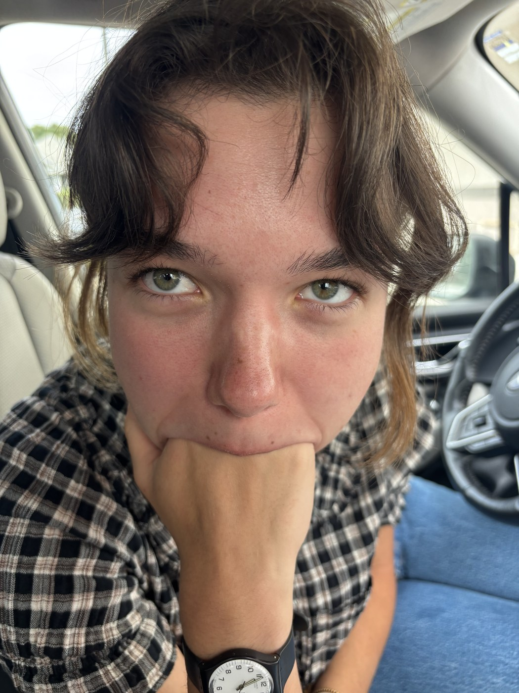

About
I love writing, knitting, reading, and my boyfriend.

Add photo.jpgTable of Contents
01 Writing short stories & essays 02 Knitting what's on the needles 03 Reading books I'm in right now 04 Things I saw pictures, nothing fancy 05 Other things I like music & movies